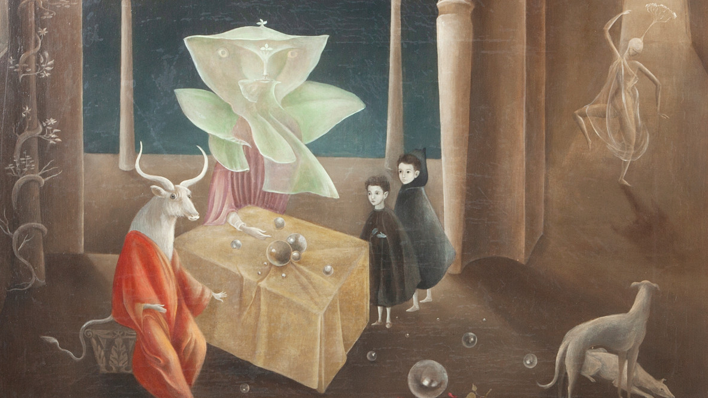
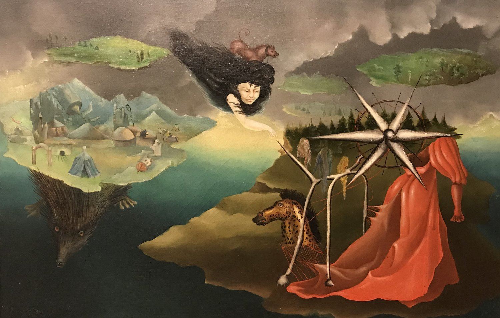
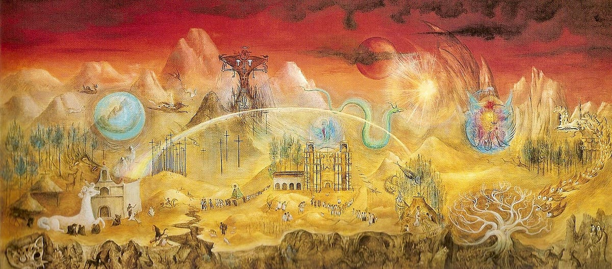

Mary Leonora Carrington (6 April 1917 – 25 May 2011) was a British-born surrealist painter and novelist. She lived most of her adult life in Mexico City and was one of the last surviving participants in the surrealist movement of the 1930s. Carrington was also a founding member of the women's liberation movement in Mexico during the 1970s.
Explore
v

And Then We Saw the Daughter of the Minotaur, 1953
Early Life
Mary Leonora Carrington was born at Westwood House in Clayton Green, England, into a Roman Catholic family. Her father, Harold Wylde Carrington, was a wealthy textile manufacturer, and her mother, Marie, was from Ireland. From 1920 until 1927 she lived at Crookhey Hall, a Gothic Revival mansion in Cockerham, which exerted a great influence on her imagination.
In 1927, at the age of ten, she saw her first Surrealist painting in a Left Bank gallery in Paris and later met many Surrealists, including Paul Éluard. Her father opposed her career as an artist, but her mother encouraged her. She returned to England and was presented at Court, but according to her, she brought a copy of Aldous Huxley's Eyeless in Gaza (1936) to read instead. In 1935, she attended the Chelsea School of Art in London for one year, and she was able to transfer to the Ozenfant Academy of Fine Arts established by the French modernist Amédée Ozenfant in London.
She became familiar with Surrealism from a copy of Herbert Read's book, Surrealism (1936), given to her by her mother, but she received little encouragement from her family to forge an artistic career. The Surrealist poet and patron Edward James was the champion of her work in Britain; James bought many of her paintings and arranged a show in 1947 for her work at the Pierre Matisse Gallery in New York. Some works are still hanging at James' former family home, currently West Dean College in West Dean, West Sussex.
Self-Portrait (Inn of the Dawn Horse), 1937-1938
Marriage and Mexico
In 1936 Carrington saw the work of the German surrealist Max Ernst at the International Surrealist Exhibition in London and was attracted to the Surrealist artist before she even met him. In 1937 Carrington met Ernst at a party held in London.The artists bonded and returned together to Paris, where Ernst promptly separated from his wife. In 1938 they left Paris and settled in Saint Martin d'Ardèche in southern France. The new couple collaborated and supported each other's artistic development.
With the outbreak of World War II Ernst, who was German, was arrested by the French authorities for being a "hostile alien". After Ernst's arrest Carrington was devastated and agreed to go to Spain with a friend, Catherine Yarrow. She stayed with family friends in Madrid until her paralyzing anxiety and delusions led to a psychotic break and she was admitted into an asylum. She was released from the asylum into the care of a keeper, and was told that her parents had decided to send her to a sanatorium in South Africa. En route to South Africa, she stopped in Portugal, where she made her escape. She went to the Mexican Embassy to find Renato Leduc, a poet and Mexican Ambassador.
After spending a year in New York, Leduc and Carrington went to Mexico, where many European artists fled in search of asylum, in 1942, which she grew to love and where she lived, on and off, for the rest of her life. When Carrington first came to Mexico she was preceded by the success of surrealist exhibitions which allowed her to create many connections within the surrealist movement. Her connections within these surrealist circles were influential in opening artistic doors that had long been closed to Mexican artists. After living in Mexico for seven years, Leonora Carrington held her first solo exhibition at the Galeria Clardecor. Much of the initial response from the public was very encouraging, and for months afterwards the press published positive and approving critic reviews.

Arts, 110, 1944
Themes
She was not interested in the writings of Sigmund Freud, as were other Surrealists in the movement. She instead focused on magical realism and alchemy and used autobiographical detail and symbolism as the subjects of her paintings. Carrington was interested in presenting female sexuality as she experienced it, rather than as that of male surrealists' characterization of female sexuality. Carrington's work of the 1940s is focused on the underlying theme of women's role in the creative process.
Carrington's work is identified and compared with the surrealist movement. Within the surrealist movement, there was a strong exploration of the woman's body combined with the mysterious forces of nature. During this time women artists correlated the feminine figure with creative nature while using ironic stances.
Three years after being released from the asylum and with the encouragement of André Breton, Carrington wrote about her psychotic experience in her memoir Down Below. In this, she explained how she had a nervous breakdown, didn't want to eat, and left Spain. This is where she was imprisoned in an asylum. She illustrates all that was done to her: ruthless institutional therapies, sexual assault, hallucinatory drugs, and unsanitary conditions. It has been suggested that the events of the book should not be taken literally, given Carrington's state at the time of her institutionalization; however, recent authors have sought to examine the details of her institution in order to discredit this theory.

The Magical World of the Mayas, 1964
Legacy
Carrington is credited with feminising surrealism. Her paintings and writing brought a woman's perspective to what had otherwise been a largely male-dominated artistic movement. Carrington demonstrated that women should be seen as artists in their own right and not to be used as muses by male artists.
In 2022, the 59th International Art Exhibition was titled The Milk of Dreams. This name is borrowed from a book by Carrington, in which, as Cecilia Alemani says she, "describes a magical world where life is constantly re-envisioned through the prism of the imagination, and where everyone can change, be transformed, become something and someone else."
Carrington's life inspired "Out of This World: The Surreal Art of Leonora Carrington", a children's nonfiction book written by Michelle Markell and illustrated by Amanda Hall and which tells the story of Carrington's life and art as she pursues her creative talents and breaks with 20-century conventions about the ways in which an upper-class women and debutants should behave.